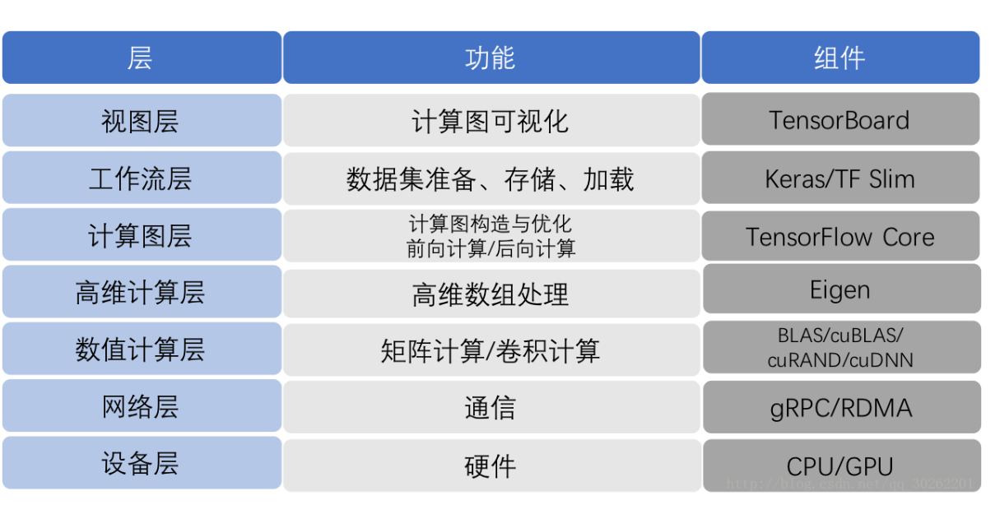

Tensorflow底层及基本架构
1. Tensorflow 框架


整个框架以C API为界，分为前端和后端两大部分。
前端：提供编程模型，多语言的接口支持，比如Python Java C++等。通过C API建立前后端的连接，后面详细讲解。
后端：提供运行环境，完成计算图的执行。进一步分为4层
运行时：分为分布式运行时和本地运行时，负责计算图的接收，构造，编排等。
计算层：提供各op算子的内核实现，例如conv2d, relu等
通信层：实现组件间数据通信，基于GRPC和RDMA两种通信方式
设备层：提供多种异构设备的支持，如CPU GPU TPU FPGA等
2. Tensorflow 程序的运行
TensorFlow的一大特点是，图的构造和执行相分离。用户添加完算子，构建好整DAG图后，才开始进行训练和执行，也就是图的执行。大体流程如下
图构建：用户在client中基于TensorFlow的多语言编程接口，添加算子，完成计算图的构造。
图传递：client开启session，通过它建立和master之间的连接。执行session.run()时，将构造好的graph序列化为graphDef后，以protobuf的格式传递给master。
图剪枝：master根据session.run()传递的fetches和feeds列表，反向遍历全图full graph，实施剪枝，得到最小依赖子图
图分裂：master将最小子图分裂为多个Graph Partition，并注册到多个worker上。一个worker对应一个Graph Partition。
图二次分裂：worker根据当前可用硬件资源，如CPU GPU，将Graph Partition按照op算子设备约束规范（例如tf.device(’/cpu:0’)，二次分裂到不同设备上。每个计算设备对应一个Graph Partition。
图运行：对于每一个计算设备，worker依照op在kernel中的实现，完成op的运算。设备间数据通信可以使用send/recv节点，而worker间通信，则使用GRPC或RDMA协议。
| 一级目录文件 | 说明 |
|---|---|
| ACKNOWLEDGMENTS | TensorFlow 版权声明 |
| ADOPTERS.md | 使用 TensorFlow 的人员或组织列表 |
| AUTHORS | TensorFlow 作者的官方列表 |
| BUILD | |
| CONTRIBUTING.md | TensorFlow 贡献指导 |
| ISSUE_TEMPLATE.md | 提 ISSUE 的模板 |
| LICENSE | 版权许可 |
| README.md | RELEASE.md |
| 每次发版的 change log | |
| WORKSPACE | 配置移动端开发环境 |
| bower.BUILD | |
| configure | models.BUILD |
| tensorflow | 主目录，后面分析的重点 |
| third_party | 第三方库，包括 eigen3（特征运算的库，包括 SVD、LU 分解等）、gpus（支持 cuda）、 hadoop、jpeg、llvm、py、sycl |
| tools | 构建 cuda 支持 └── util |
参考资料
-
https://blog.csdn.net/qq_30262201/article/details/79106198 ↩